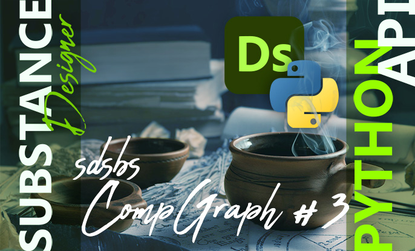
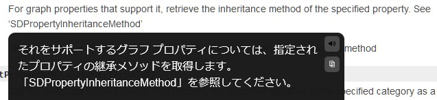
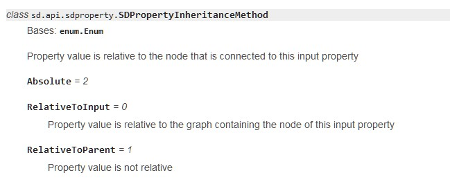
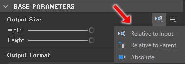

SubstanceDesigner
SubstanceDesigner PythonAPI大解読
SDSBSCompGraph：#3
2024/03
実行環境
- SubstanceDesignerバージョン：13.1.1
- PythonAPIバージョン：13.0.0
getPropertyInheritanceMethod
getPropertyInheritanceMethod (sdProperty: sd.api.sdproperty.SDProperty) →
sd.api.sdproperty.SDPropertyInheritanceMethod
Paremeters:
- sdProperty - The property we want to query the inheritance method
リファレンスによると、次のように説明があります。
この説明だけではなんのこっちゃ分からないので、SDPropertyInheritanceMethod クラスのリファレンスも確認してみます。
む。なんだか見慣れた横文字がありますね。。

これのことと見て間違いないでしょう。
ですが、引数に SDProperty クラスのオブジェクトを要求しているのが難儀です。。
おそらく、どのプロパティの継承モードを参照したいかを引数で指定するということなのでしょう。
検証するためには、グラフのプロパティのオブジェクト を取得する方法を調査せねばなりません。
このあたりはプラグインの開発経験から勘があるので、詳細は後のトピックで触れるとして、ひとまず検証してみます。
まとめ
今回で、
なんだか、こうして記事にまとめながら調べものをするのはとても合理的だなと思いました。
特に、「今何を調べようとしてたんだっけ…」みたいな 思考の沼 にハマるのは、こういう調べものには付き物です。